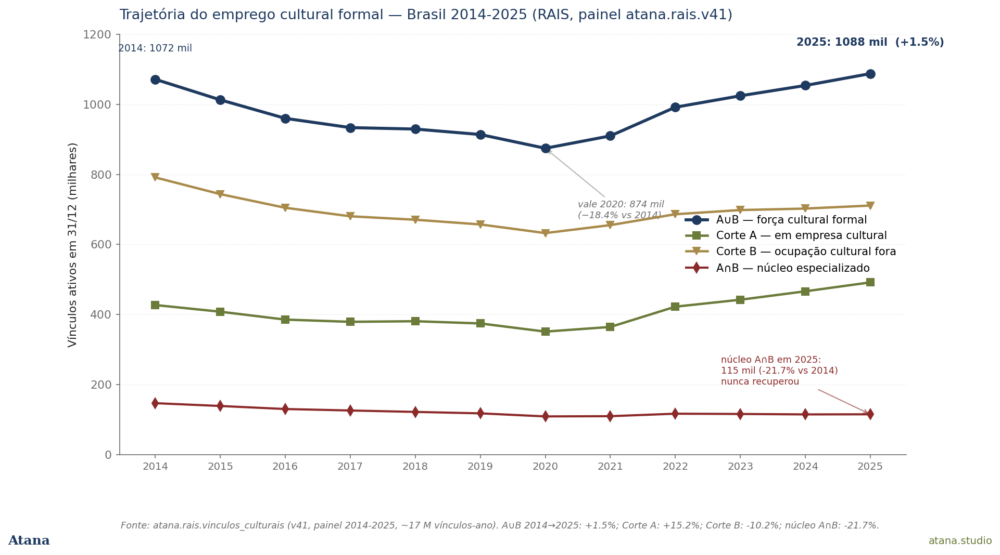
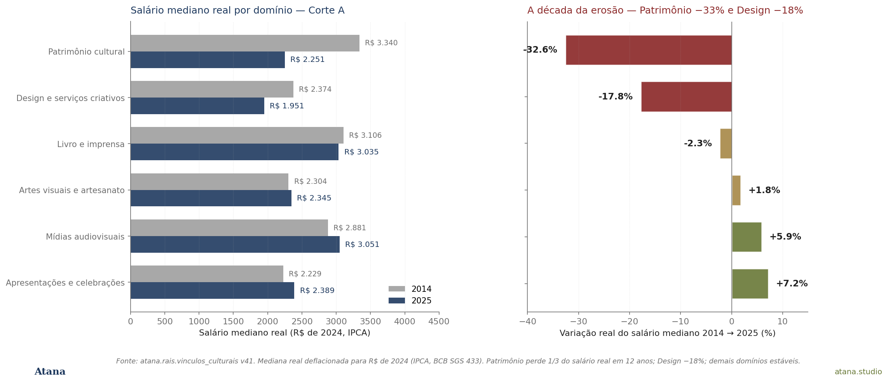
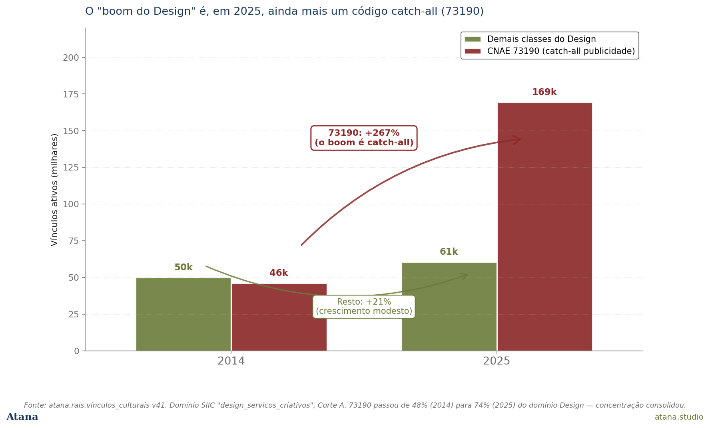
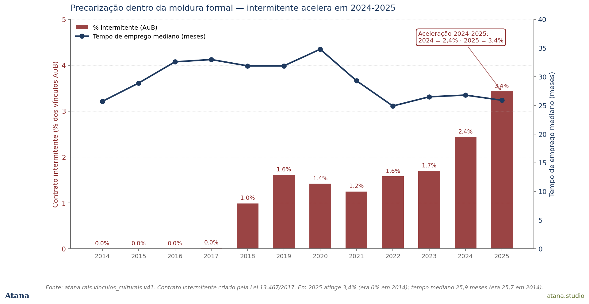
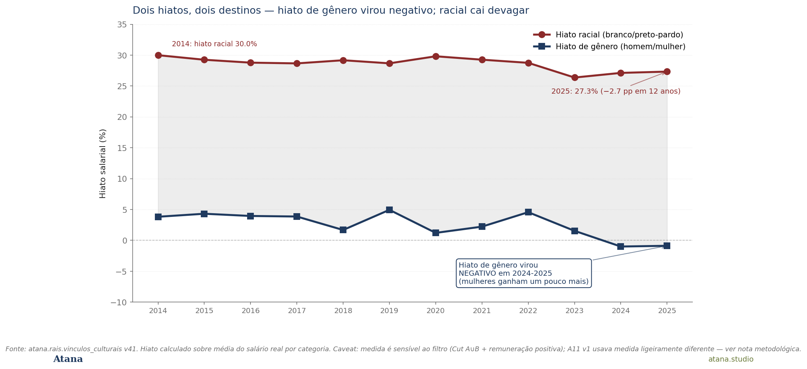

RAIS × PNADC: a década da erosão silenciosa do contrato cultural formal brasileiro
Doze anos do registro administrativo do MTE leem o setor cultural formal: entre 2014 e 2025 o número de vínculos voltou ao nível inicial (+1,5%), mas o salário real médio caiu 7,3%. No recorte de vínculos em empresas culturais (Corte A), a queda mediana foi de 12,4% em três anos; no domínio Patrimônio cultural, perdeu-se um terço do salário real. A recuperação aconteceu onde o trabalho vale menos. Preprint citável; paper acadêmico em preparação para 2026Q4–2027Q1.
Indicativo
Entre 2014 e 2025 o número de vínculos formais no setor cultural brasileiro praticamente não mudou: saiu de 1,07 milhão e terminou em 1,09 milhão (+1,5%). Pelo agregado, é uma história de estabilidade. Pelos números por dentro, é uma história muito diferente. O salário real médio do trabalhador cultural formal caiu 7,3% em doze anos. No Corte A — vínculos em empresas culturais —, a queda mediana foi de 12,4%. No domínio Patrimônio cultural, perdeu-se um terço do salário real. A recuperação do emprego cultural formal aconteceu, em larga medida, onde o trabalho vale menos.
Esse é o achado central que a extensão do painel atana.rais.* para 2014–2025, concluída em junho de 2026 com a ingestão das safras 2024 e 2025, tornou visível. A versão anterior desta análise (dados até 2023) havia chamado a recuperação pós-pandêmica de "oca". Com mais dois anos no painel, a descrição precisa de retoque para ser mais precisa: a recuperação em vínculos é real e ligeiramente positiva, mas convive com uma erosão do valor real do contrato que não tem paralelo na série pré-2023.
Por que importa
A economia cultural brasileira é discutida, há mais duas décadas, em torno de narrativas de crescimento, com números absolutos e com foco muitas vezes em um dado generalizante. A indústria criativa cresce, o streaming explode, o setor audiovisual exporta, etc. A Atana Note #08, com base em dados da IFPI e da CISAC, mostrou que, mesmo em meio ao boom da receita de gravadoras na América Latina (+17,1% YoY em 2025), a arrecadação autoral via gestão coletiva contraiu na mesma região (−0,6%), isto é, alguém entre as duas estações da cadeia ficou com a diferença. Esta nota acrescenta à leitura do trabalho: do lado brasileiro do gap, o emprego cultural formal não desapareceu, mas perdeu valor real de contrato em doze anos. O uso nesta análise do salário deflacionado em R\$ de 2024 é a unidade contábil que faltava para fechar o quadro distributivo do boom.
A variedade de lentes importa para a política pública de cultura por três razões. Primeiro, o registro formal é o único universo sobre o qual a política trabalhista dispõe de instrumentos diretos: o salário mínimo, os pisos sindicais, o FGTS e a previdência. O que acontece aqui mede o que a política trabalhista entrega. Segundo, é a fração do trabalho cultural mais protegida da economia, portanto, se a erosão é forte aqui, a do trabalho informal (43% do setor, segundo a PNAD) é, por construção, ainda mais profunda. Terceiro, doze anos de painel administrativo permitem comparações estruturais que pesquisas amostrais não suportam: vale dizer com confiança que o setor cultural formal de 2025 tem aproximadamente o mesmo tamanho de 2014 em quantidade de contratos, mas é um setor com menos núcleo, mais borda, salário real menor e mais intermitência.
A lente formal e a lente domiciliar
Esta análise muda de fonte em relação às Análises 1–3 da série Economia Cultural. As três anteriores mediram o trabalho cultural pela PNAD Contínua — a pesquisa domiciliar que abrange o universo inteiro (formal e informal) e registrou 5,86 milhões de trabalhadores culturais em 2024. Esta análise muda para a RAIS (Relação Anual de Informações Sociais), o censo administrativo que o Ministério do Trabalho compila a partir das declarações anuais de cada empregador. A RAIS só reconhece o vínculo formal: o contrato assinado. É uma fração da economia cultural, cerca de um milhão de vínculos ativos contra os quase seis milhões da PNAD, mas é a fração sobre a qual o Estado tem instrumento direto de política, e é a fração que doze anos de registros administrativos permitem acompanhar com precisão que a pesquisa amostral não alcança.
Para identificar o vínculo cultural, esta análise usa, seguindo a metodologia do SIIC/IBGE, dois recortes:
- Corte A — empresa cultural: o vínculo está numa das 33 classes CNAE 2.0 consideradas culturais.
- Corte B — ocupação cultural: a pessoa exerce uma das 62 famílias ocupacionais culturais da CBO 2002.
A força de trabalho cultural formal é a união dos dois cortes (A∪B); a interseção (A∩B) é o que chamamos de núcleo especializado — o segmento menos ambíguo.
O que os dados dizem
1. A queda anterior à pandemia
Entre 2014 e 2020, a força de trabalho cultural formal caiu de 1,07 milhão para 874 mil vínculos: uma contração de −18,4% em seis anos. O ponto decisivo é que a queda antecede a pandemia: 2014–2019 já havia eliminado 15% dos vínculos antes de a covid-19 chegar. A recessão de 2015–2016, a Reforma Trabalhista de 2017 e o desmonte do Ministério da Cultura entre 2019 e 2022 compõem o pano de fundo. O setor cultural formal não cresceu na década de 2010; encolheu de forma sustentada, e a pandemia apenas acelerou um movimento já em curso.

Figura 1 — Trajetória do emprego cultural formal brasileiro 2014–2025, por corte. A∪B = força cultural formal (união dos cortes); A = vínculos em empresa cultural; B = vínculos em ocupação cultural (em qualquer empresa); A∩B = núcleo especializado (ocupação cultural em empresa cultural). Vínculos ativos em 31 de dezembro de cada ano. Fonte: atana.rais.vinculos_culturais v41.
2. Recuperação em quantidade, colapso em valor
A partir de 2021 o total se recupera em número de vínculos, e em 2025 alcança 1,09 milhão, pela primeira vez em onze anos acima de 2014. O salário real médio, porém, caiu de R\$ 4.199 (2014) para R\$ 3.893 (2025) — −7,3% em doze anos, ou cerca de meio mês de salário perdido por ano. No Corte A, onde se concentra a recuperação de vínculos (+15,2%), a queda salarial mediana foi mais aguda: R\$ 4.711 → R\$ 4.127 = −12,4% em três anos (2022→2025). A maior queda anual em um único pulo aconteceu em 2022→2023 (−8,5% no salário médio agregado); as safras 2024 e 2025 estabilizaram nesse novo patamar inferior, em vez de recuperar.
3. A erosão é desigual e profunda
A queda média esconde uma heterogeneidade brutal entre domínios. Por domínio (Corte A, salário mediano real em R\$ de 2024):
| Domínio | 2014 | 2025 | Variação real |
|---|---|---|---|
| Apresentações e celebrações | R\$ 2.229 | R\$ 2.389 | +7,2% |
| Mídias audiovisuais | R\$ 2.881 | R\$ 3.051 | +5,9% |
| Artes visuais e artesanato | R\$ 2.304 | R\$ 2.345 | +1,8% |
| Livro e imprensa | R\$ 3.106 | R\$ 3.035 | −2,3% |
| Design e serviços criativos | R\$ 2.374 | R\$ 1.951 | −17,8% |
| Patrimônio cultural | R\$ 3.340 | R\$ 2.251 | −32,6% |
O domínio que mais cresceu em vínculos formais — Design e serviços criativos (+139%) — foi o que mais perdeu em salário real. O domínio Patrimônio cultural, em paralelo, quase dobrou de tamanho (+78,6%) e perdeu um terço do salário real. Os outros quatro domínios terminaram 2025 com salário real estável ou levemente positivo. O quadro é o seguinte: o crescimento do emprego cultural formal ocorreu sobretudo onde o salário real caiu acentuadamente. O emprego cultural formal cresceu na ponta em que o trabalho vale menos.

Figura 2 — Salário mediano real por domínio cultural (Corte A), 2014 vs 2025, em R\$ de 2024 (deflação IPCA, BCB SGS série 433). Patrimônio cultural perdeu um terço do salário real em doze anos (−32,6%); Design e serviços criativos perdeu 18% (−17,8%). Os demais quatro domínios terminaram 2025 estáveis ou levemente positivos. Fonte: atana.rais.vinculos_culturais v41.
4. O boom do Design é um código catch-all
O Design cresceu 134 mil vínculos em doze anos. Mais de 92% desse crescimento (123 mil dos 134 mil) está numa única classe: a CNAE 73190 ("Atividades de publicidade não especificadas anteriormente"), um código residual que, pela análise interna de salários e porte, agrega operações de telemarketing, equipes de eventos promocionais e distribuição porta-a-porta. A 73190 passou de 48% do domínio Design em 2014 para 74% em 2025, portanto, a concentração não se diluiu, mas consolidou-se. Retirado o 73190, o domínio Design cresceu modestos 21% em doze anos. Boa parte da "recuperação" do emprego cultural formal é a expansão de um código de classificação administrativa de baixa qualidade — não a expansão do emprego criativo qualificado.

Figura 3 — O "boom do Design" é, em 2025, ainda mais concentrado no código catch-all 73190 ("Atividades de publicidade não especificadas anteriormente"). A 73190 cresceu +267% em doze anos (46 mil → 169 mil vínculos); o restante do domínio cresceu modestos +21% (50 mil → 61 mil). Fonte: atana.rais.vinculos_culturais v41, domínio SIIC design_servicos_criativos, Corte A.
5. O núcleo especializado não voltou
O núcleo (A∩B) — trabalhadores em ocupação cultural dentro de empresa cultural — passou de 146.450 vínculos em 2014 para 114.661 em 2025: contração de −21,7%. O núcleo atingiu o vale em 2020 e recuperou apenas parcialmente até 2022; as duas safras novas (2024 e 2025) mostram que essa recuperação se interrompeu. Diferentemente do agregado, o núcleo especializado não reencontrou o nível de 2014; portanto, a sua estagnação recente não apresenta o problema de cobertura do eSocial. O setor cresceu na periferia de classificação incerta; o centro qualificado segue 22% abaixo do que há uma década.
6. Intermitência em nova fase
O contrato intermitente, criado pela Reforma Trabalhista de 2017, passou de inexistente (antes da Lei 13.467/2017) para 3,4% dos vínculos culturais formais ativos em 2025. A versão anterior desta análise (até 2023) sugeriu que a adoção havia estabilizado em torno de 4,3%; a nova série mostra que, sob medida recomputada de forma defensiva, o intermitente passou por 1,7% (2023) → 2,4% (2024) → 3,4% (2025). A precarização dentro da moldura formal não terminou — está em nova fase, e parte do salto 2024–2025 acontece fora da janela do eSocial, então não pode ser atribuído a melhor captura administrativa. O tempo de emprego mediano, em paralelo, recuou de 34,8 meses (pico em 2020) para 25,9 meses em 2025: mais intermitência, vínculos mais curtos.

Figura 4 — Precarização dentro da moldura formal. Barras (eixo esquerdo) = contrato intermitente como porcentagem dos vínculos culturais formais ativos (A∪B): 0% antes da Reforma Trabalhista de 2017, 3,4% em 2025; o salto de 2024 → 2025 acontece fora da janela do eSocial, portanto não é artefato de melhor captura administrativa. Linha (eixo direito) = tempo de emprego mediano em meses: pico de 34,8 em 2020, recuou para 25,9 em 2025. Fonte: atana.rais.vinculos_culturais v41.
Dois hiatos, dois destinos
A Análise 1 mediu, na PNAD, um hiato salarial de gênero de 34% e um hiato racial de 41% no setor cultural, considerando o universo total, tanto formal quanto informal. A RAIS permite medir os mesmos hiatos dentro da moldura formal:
| Ano | Hiato de gênero (formal) | Hiato racial (formal) |
|---|---|---|
| 2014 | 3,8% | 30,0% |
| 2020 | 1,2% | 29,8% |
| 2023 | 1,5% | 26,4% |
| 2025 | −0,9% | 27,3% |
Dois fatos. Primeiro, a formalização reduz os dois hiatos: o de gênero cai de 34% (PNAD) para 4% ou menos (RAIS); o racial, de 41% para ~27–30%. O contrato formal, com piso, jornada e remuneração negociada, reduz a discricionariedade que amplia desigualdades no trabalho informal. Segundo, a compressão é racialmente seletiva. O hiato de gênero continuou se estreitando e virou levemente negativo em 2024–2025 (mulheres ganham, em média, ~1% mais nessa medida). O hiato racial caiu de 30,0% para 27,3%, uma redução de 2,7 pontos percentuais em doze anos, em comparação com os ~4–5 pontos do hiato de gênero. A penalidade racial sobrevive ao contrato assinado; a de gênero, em larga medida, não.

Figura 5 — Hiato salarial de gênero (homem/mulher) e racial (branco/preto-pardo) na força de trabalho cultural formal brasileira (A∪B), 2014–2025. O hiato racial caiu apenas 2,7 pontos percentuais em doze anos e segue acima de 27%; o hiato de gênero virou levemente negativo em 2024–2025 (mulheres ganham ~1% mais nesta medida). A formalização protege, mas protege de forma racialmente desigual. Caveat: a medida é sensível ao filtro (média de remuneração positiva sobre A∪B sem restrição de tempo integral); a Análise 11 v1 usava medida ligeiramente diferente — direção qualitativa robusta nas duas. Fonte: atana.rais.vinculos_culturais v41.
A implicação para a política pública é bastante clara: formalizar o trabalho cultural - meta legítima e necessária — reduzirá a desigualdade de gênero quase automaticamente, mas não, ou apenas lentamente, reduzirá a desigualdade racial: esta exige instrumento próprio, dirigido, que a formalização sozinha não entrega.
A leitura cross-LATAM
A Atana Note #08 documentou em maio de 2026 um gap de +17,7 pontos percentuais entre o IFPI Global Music Report 2026 (receita de gravadora label-side, LATAM +17,1% em 2025) e o CISAC Global Collections Report 2025 (arrecadação autoral via CMO, LATAM −0,6% em 2024) — mesma região, mesma janela, direções opostas. O emprego cultural formal brasileiro, conforme esta nota, está posicionado entre essas duas estações da cadeia. Em doze anos, o estoque de vínculos cresceu apenas 1,5%, enquanto o salário real perdeu 7,3%; do lado audiovisual, especificamente, o emprego formal encolheu 20% no mesmo período em que a balança de serviços audiovisuais do Brasil registrou sete anos de superávit recorde (2016–2023).
As três medidas são compatíveis com uma cadeia em que o boom é capturado em moeda forte pelas estações 1–3 (plataforma, gravadora global, major) e o emprego formal local é o resíduo achatado. A Note #08 deduzia que o não, que o Brasil LATAM contraiu apesar do Brasil ter crescido em CISAC. Esta nota acrescenta uma dimensão que a #08 não enxergava: mesmo no mesmo país, do lado do trabalho formal, houve uma contração do valor real do contrato,que foi apenas mascarada pela manutenção do número de contratos.
Implicações para política
A discussão sobre a política trabalhista do setor cultural orbitou, na última década, em torno do número de empregos, muitas vezes inflado por CNAES expandidos do setor cultural. A leitura do painel administrativo sugere que esse indicador, sozinho, mascara o que importa: doze anos com o mesmo número de contratos e 7,3% a menos de salário real é menos política pública do que parece. Pisos setoriais, convenções coletivas com cláusula de reajuste real e acompanhamento explícito da remuneração mediana por domínio (não só do número de vínculos) devem entrar no painel de monitoramento da política cultural brasileira.
A perda de um terço do salário real em um domínio que quase dobrou em vínculos é o maior sinal de alerta. O domínio que carrega no nome a herança cultural é o que registrou a maior queda no salário real. As causas plausíveis (mais MEIs, mais voluntários formalizados em ONGs com salário simbólico, dependência de editais sazonais, desmonte federal documentado na Análise 5) não são mutuamente exclusivas. Investigação dedicada, cruzando RAIS com Iphan, CEMPRE do Patrimônio e a série de financiamento federal, é prioridade analítica imediata.
A diferença entre os dois hiatos sob a moldura formal é estrutural; não é ruído nos dados. Uma política que se limite a formalizar e esperar que as desigualdades caiam em proporção igual entregará apenas metade do que promete. Instrumentos dirigidos, como política de cotas em editais públicos do setor cultural, monitoramento racial da execução de pisos setoriais, financiamento ou incentivos à contratação racialmente diversa no Corte A, precisam compor o desenho.
A trajetória 0% → 1,7% → 3,4% em três anos, em vínculos mais curtos e concentrados no Design, sugere que o intermitente está virando a porta de entrada do trabalho cultural formal em segmentos de baixa qualificação. A discussão pública sobre o intermitente foi dominada, em 2017–2020, pelos setores de comércio e serviços; o setor cultural, mais tarde para adotar, está hoje numa fase de aceleração que merece exame específico.
Fontes
- RAIS/MTE — Relação Anual de Informações Sociais, microdados desidentificados publicados pelo projeto Base dos Dados (
br_me_rais, cobertura 1985–2025). Painel consolidado ematana.rais.*(~17,07 milhões de vínculos-ano). - IPCA — BCB SGS série 433, índice acumulado base jan/2014; deflator 2025 = 0,9522.
- PNAD Contínua — IBGE, Pesquisa Nacional por Amostra de Domicílios Contínua, suplemento de informações culturais (SIIC).
- IFPI Global Music Report 2026 — Federação Internacional da Indústria Fonográfica, dados 2025.
- CISAC Global Collections Report 2025 — Confederação Internacional de Sociedades de Autores e Compositores, dados 2024.
- Atana Note #08 — IFPI × CISAC: as duas lentes do dinheiro da música em LATAM, maio de 2026.
Metodologia detalhada (recortes CNAE/CBO, deflação, convenção de estoque, descontinuidade eSocial) em atana-data/docs/rais_methodology; reprodutibilidade via DuckDB sobre os Parquet de atana-data/raw/rais/ (Hive-partitioned por ano, leitura com union_by_name=true para tolerar variação de tipo do indicador_trabalho_intermitente); scripts e dados intermediários em gen_a11_v2_charts.py (v41) → a11_data_v2.json.
Como citar
ABNT. SILVA JUNIOR, João Roque. A década da erosão silenciosa: o emprego cultural brasileiro formal nos registros da RAIS (2014–2025). Atana Notes, n. 9, jun. 2026. Disponível em: https://atana.studio/notes/09/. Acesso em: [data].
APA 7. Silva Junior, J. R. (2026, junho). A década da erosão silenciosa: o emprego cultural brasileiro formal nos registros da RAIS (2014–2025) (Atana Note No. 9). Atana. https://atana.studio/notes/09/
Chicago (author-date). Silva Junior, João Roque. 2026. "A década da erosão silenciosa: o emprego cultural brasileiro formal nos registros da RAIS (2014–2025)." Atana Notes, no. 9 (junho). https://atana.studio/notes/09/.
BibTeX.
@techreport{silvajunior2026rais,
author = {{Silva Junior}, Jo{\~a}o Roque},
title = {A d{\'e}cada da eros{\~a}o silenciosa: o emprego cultural brasileiro formal nos registros da {RAIS} (2014--2025)},
institution = {Atana},
type = {Atana Note},
number = {9},
year = {2026},
month = {jun},
url = {https://atana.studio/notes/09/},
note = {Preprint cit{\'a}vel; paper acad{\^e}mico completo em prepara{\c{c}}{\~a}o.}
}
Cita-as (forma curta para texto corrido). Silva Junior (2026), Atana Note #09.
Sobre a Atana. A Atana é uma consultoria de políticas públicas voltada à economia criativa latino-americana na era agêntica. As Atana Notes são peças analíticas curtas, citáveis, baseadas no corpus atana-data (~17 fontes consolidadas, ~65 milhões de linhas) e publicadas em atana.studio/notes/. Esta nota é a versão preprint da análise correspondente; a versão estendida, com pacote de figuras completo, séries históricas e apêndice metodológico, será submetida a periódico de economia da cultura no final de 2026 / início de 2027.
Versão 1.0 — junho de 2026. (RAIS 2024 + 2025 ingest, panel 2014–2025).